Introduction to Wavelength Frame Multiplication
Contents
Introduction to Wavelength Frame Multiplication#
This notebook aims to explain the concept of wavelength frame multiplication (WFM), why is it used, how it works, and what results can be expected from using WFM at a neutron beamline.
Much of the material presented here was inspired by / copied from the paper by Schmakat et al. (2020), which we highly recommend to the reader, for more details on how a WFM chopper system is designed.
[1]:
import numpy as np
import matplotlib.pyplot as plt
import scipp as sc
from scipp import constants
import scippneutron as scn
import ess.wfm as wfm
import ess.choppers as ch
Note
The source code used to create the figures below can be viewed by downloading this notebook (this is hidden from the documentation pages for the sake of clarity).
The long ESS pulse#
Instruments at a pulsed neutron source, assuming an idealized rectangular source pulse in time of length \(t_{P}\), have a resolution given by
where \(\lambda\) is the neutron wavelength, \(t\) is time, \(\alpha = m_{\rm n}/h = 2.5278 \times 10^{-4}~{\rm s}\unicode{x212B}^{-1}{\rm m}^{-1}\) is the ratio of the neutron mass and the Planck constant, and \(z_{\rm det}\) is the distance from the source to the detector.
Here, we have assumed that the neutron velocity \(v\) is related to its wavelength via the de Broglie equation
A natural consequence of this is that the wavelength resolution \(\Delta \lambda / \lambda\) becomes finer with increasing wavelength.
This also means that the resolution is poor for a long-pulsed source such as the ESS, compared to that of a short-pulse facility, such as ISIS. A good way to visualize this is using a time-distance diagram, which can represent the paths taken by the neutrons from the source to the detector.
[3]:
figure1()
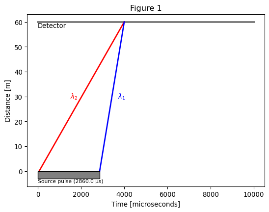
As illustrated in Fig. 1, with a long pulse, two neutrons with very different wavelengths (\(\lambda_{1} < \lambda_{2}\)) can reach the detector at the exact same time, if they originated from a different part of the pulse.
The problem cannot be resolved at the detector. According to the difference between time recorded at the detector and the measured start of the source pulse, both neutrons have the same wavelength. The detector recording system has no way of knowing that this is not the reality or adjusting for this. We instead look at the pulse generation to find ways to better measure the wavelength of our neutrons.
So what is WFM anyway?#
Within the concept of wavelength frame multiplication (WFM), each source pulse is chopped into a number of sub pulses referred to as wavelength frames, where each wavelength frame \(N\) contains a subsequent part of the spectrum of the source pulse.
The main reason for using the WFM concept is to redefine the burst time \(t_{P} = \Delta t\) as implied by Eq. (1), in order to match the required wavelength resolution of the experiment. A secondary objective, or constraint of the first, is to utilize as much of the source pulse as possible.
[4]:
figure2()
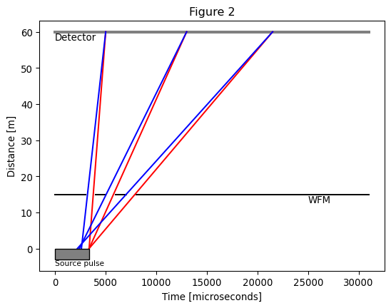
A closer look#
The ESS pulse shape#
At a real beamline, the pulse shape is not rectangular, but has rising and falling edges, as shown in Fig. 3.
[5]:
figure3()
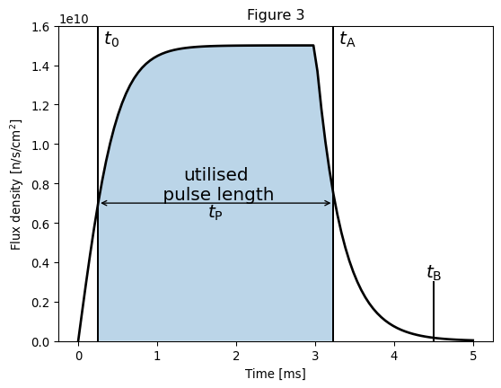
Here we define several important quantities:
The pulse \(t_0\) is defined as the point in time at which the pulse is bright enough for the purposes of the experiment.
\(t_{\rm A}\) is the time when the flux has fallen down to a level below the required brightness.
\(t_{\rm P} = t_{\rm A} - t_{0}\) is the portion of the pulse that is used for the measurements, the analog of the pulse length for the ideal rectangular pulse above.
\(t_{\rm B}\) marks the end of the pulse; i.e. the time when the flux is considered to be effectively zero.
Using a single WFM chopper#
The effective burst time \(\Delta t\) is defined by a WFM chopper (WFMC), as illustrated in Fig. 4, for the two limiting wavelengths \(\lambda_{\rm min}\) and \(\lambda_{\rm max}\) of a single wavelength frame \(N\).
The wavelength frame is re-limited in a predefined time window by at least one frame overlap chopper (FOC) that inhibits the overlap of neutrons from various frames, as indicated by the dashed lines in Fig. 4. Their wavelength is labeled with \(\lambda_{\rm min}^{'}\) and \(\lambda_{\rm max}^{'}\). The FOC is also removes undesired neutrons with the wrong wavelength that arise from the rising and falling edges at the beginning and at the end of the source pulse. Although their intensity is small, neutrons with an undesired wavelength would lead to an increased background.
[6]:
figure4()
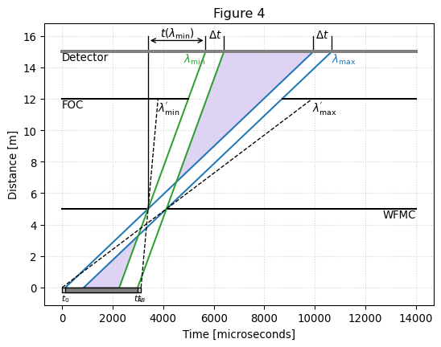
The relative spectral resolution \(\Delta \lambda / \lambda\) at the detector position \(z_{\rm det}\) is defined by the burst time \(\Delta t\) and the time-of-flight \(t(\lambda)\) of the neutrons (see eq. (1)). Because \(\Delta t\) is independent of the wavelength for the case of a single WFM chopper disc, \(\Delta \lambda / \lambda\) depends on \(\lambda\), on the distance \(z_{\rm WFM}\) of the WFM chopper from the source, and on the detector position \(z_{\rm det}\) as depicted in Fig. 4.
The WFM chopper acts as a virtual source, reducing the effective burst time \(\Delta t\), while at the same time also reducing the effective time-of-flight to the detector from \(t(\lambda) = \alpha \lambda z_{\rm det}\) to \(t(\lambda) = \alpha \lambda (z_{\rm det} - z_{\rm WFM})\). Note that this assumes a straight line from WFM choppers to the detector. In the case of scattering from a sample, the first branch of the flight path (\(L_{1}\)) would be modified, while the secondary path (\(L_{2}\)) will remain unchanged.
A resolution that depends on \(\lambda\) is not suited for some applications (such as imaging, reflectometry, …) where a constant \(\Delta \lambda / \lambda\) is much more desirable.
Using a pair of optically blind choppers#
A constant wavelength resolution \(\Delta \lambda / \lambda\) can be enforced by using a pair of optically blind WFM chopper discs, positioned at the positions \(z_{\rm WFM1}\) and \(z_{\rm WFM2} = z_{\rm WFM1} + \Delta z_{\rm WFM}\), as shown in Fig. 5.
In this context, ‘optically blind’ indicates that the choppers have the same opening angles, but the phase of the second chopper is shifted such that the second chopper opens exactly at the time when the first chopper closes. Such a setup introduces a wavelength dependence in the effective burst time \(\Delta t(\lambda) = \alpha \lambda \Delta z_{\rm WFM}\).
The time-of-flight to the detector remains the same as for the single WFM disc setup described above (\(t(\lambda) = \alpha \lambda (z_{\rm det} - z_{\rm WFM})\)) with \(z_{\rm WFM} = \frac{1}{2} (z_{\rm WFM1} + z_{\rm WFM2})\) now representing the center position of the WFM chopper pair from the source.
The resolution for an idealized instrument with infinitesimally small beam cross-section can again be calculated using Eq. (1):
Because the term on the right hand side of Eq. (2) is constant, the resolution becomes independent of the wavelength for an optically blind WFM chopper system.
[7]:
figure5()
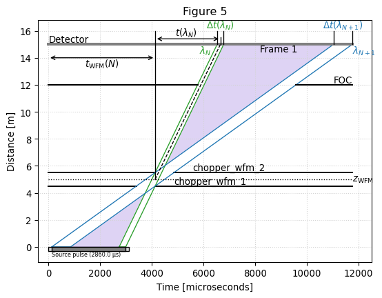
In a real WFM chopper system, more than one frame can be realized by equipping the chopper with additional windows such that the full band width that fits in the time period between two subsequent source pulses at the detector position is used. This is illustrated in Fig. 6.
The frame overlap chopper defines the bandwidth of the frame \(N\) in order to suppress cross-talk from neighboring wavelength frames, as illustrated in Fig. 6 for two subsequent wavelength frames \(N = 1\) and \(N = 2\). They are designed such that \(\lambda_{N, {\rm max}} = \lambda_{N+1, {\rm min}}\) yield a continuous spectrum at the detector. The concept of wavelength frame multiplication implies that no data can be recorded in the time window between two subsequent wavelength frames.
[8]:
figure6()
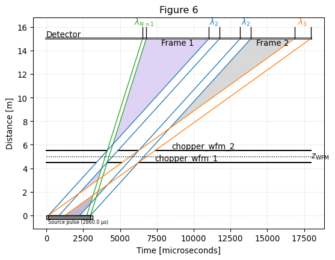
An additional feature of the WFM concept is the possibility to adjust the wavelength resolution by simply changing the distance \(\Delta z_{\rm WFM}\) between the WFM chopper discs (e.g. by using a motorized linear stage). According to Eq. (2), reducing \(\Delta z_{\rm WFM}\) leads to a finer wavelength resolution at the cost of intensity by effectively reducing the time window in which the neutrons can pass.
A short example#
We now proceed to illustrate data processing at a WFM beamline in the form of a short example.
Create a beamline#
We first create a beamline with two WFM choppers and 6 wavelength frames, using the wfm.make_fake_beamline helper utility. The detector is placed 60 m from the source.
[9]:
coords = wfm.make_fake_beamline(nframes=6)
ds = sc.Dataset(coords=coords)
f = wfm.plot.time_distance_diagram(ds)
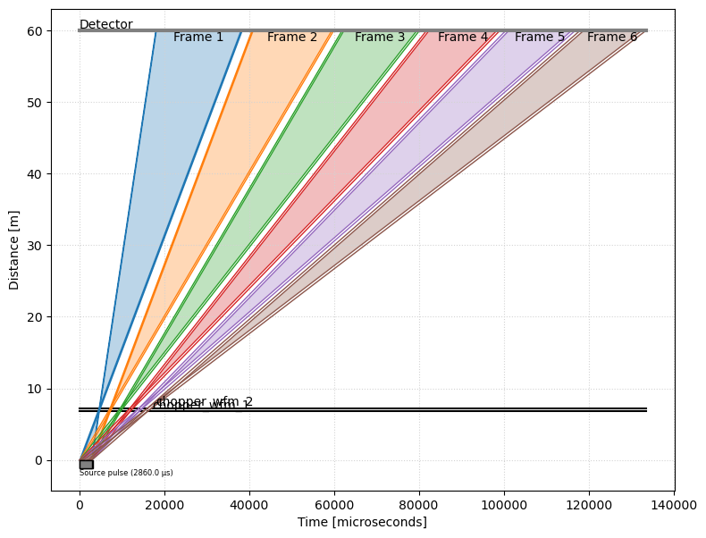
The properties of the frames (boundaries in time and wavelength) are computed using the wfm.get_frames function
[10]:
frames = wfm.get_frames(ds)
frames
[10]:
- time_correctionscippVariable(frame: 6)float64µs4702.574, 7277.777, ..., 1.408e+04, 1.607e+04
- time_minscippVariable(frame: 6)float64µs1.804e+04, 4.068e+04, ..., 1.005e+05, 1.180e+05
- delta_time_minscippVariable(frame: 6)float64µs113.750, 284.797, ..., 736.629, 868.881
- time_maxscippVariable(frame: 6)float64µs3.839e+04, 5.993e+04, ..., 1.168e+05, 1.335e+05
- delta_time_maxscippVariable(frame: 6)float64µs284.797, 445.190, ..., 868.881, 992.895
- wavelength_minscippVariable(frame: 6)float64Å1.000, 2.504, ..., 6.476, 7.638
- wavelength_maxscippVariable(frame: 6)float64Å2.504, 3.914, ..., 7.638, 8.729
- delta_wavelength_minscippVariable(frame: 6)float64Å0.008, 0.021, ..., 0.055, 0.065
- delta_wavelength_maxscippVariable(frame: 6)float64Å0.021, 0.033, ..., 0.065, 0.074
- wfm_chopper_mid_pointscippVariable()vector3m[0. 0. 7.]
Create some neutrons#
We create 6 neutrons with known wavelengths, one for each frame. We choose the values for the wavelengths based on the limits given in the frames information above.
[11]:
wavelengths = sc.array(
dims=['wavelength'], values=[1.5, 3.0, 4.5, 6.0, 7.0, 8.25], unit='angstrom'
)
We assume that all 6 neutrons originated half-way through the source pulse, and we can thus calculate the times at which they hit the detector.
[12]:
# Neutron mass to Planck constant ratio
alpha = sc.to_unit(constants.m_n / constants.h, 's/m/angstrom')
# Distance between the detector pixel and the source
dz = sc.norm(coords['position'] - coords['source_position'])
# Compute arrival times, in microseconds
arrival_times = (
sc.to_unit(alpha * dz * wavelengths, 'us')
+ coords['source_pulse_t_0']
+ (0.5 * coords['source_pulse_length'])
)
arrival_times
[12]:
- (wavelength: 6)float64µs2.431e+04, 4.706e+04, ..., 1.077e+05, 1.267e+05
Values:
array([ 24310.05718489, 47060.11436978, 69810.17155467, 92560.22873956, 107726.93352949, 126685.3145169 ])
Wrap the neutron counts and the beamline into a DataArray#
We make a data array that contains the beamline information and a histogram of the neutrons over the time dimension.
[13]:
tmin = sc.min(arrival_times)
tmax = sc.max(arrival_times)
dt = 0.1 * (tmax - tmin)
coords['time'] = sc.linspace(
dim='time', start=(tmin - dt).value, stop=(tmax + dt).value, num=2001, unit=dt.unit
)
counts, _ = np.histogram(arrival_times.values, bins=coords['time'].values)
da = sc.DataArray(
coords=coords, data=sc.array(dims=['time'], values=counts, unit='counts')
)
da
[13]:
- time: 2000
- chopper_wfm_1()PyObjectDataGroup(sizes={'frame': 6}, keys=['frequency', 'position', 'phase', 'cutout...
Values:
DataGroup(sizes={'frame': 6}, keys=[ frequency: Variable({}), position: Variable({}), phase: Variable({}), cutout_angles_center: Variable({'frame': 6}), cutout_angles_width: Variable({'frame': 6}), kind: Variable({}), ]) - chopper_wfm_2()PyObjectDataGroup(sizes={'frame': 6}, keys=['frequency', 'position', 'phase', 'cutout...
Values:
DataGroup(sizes={'frame': 6}, keys=[ frequency: Variable({}), position: Variable({}), phase: Variable({}), cutout_angles_center: Variable({'frame': 6}), cutout_angles_width: Variable({'frame': 6}), kind: Variable({}), ]) - position()vector3m[ 0. 0. 60.]
Values:
array([ 0., 0., 60.]) - source_position()vector3m[0. 0. 0.]
Values:
array([0., 0., 0.]) - source_pulse_length()float64µs2860.0
Values:
array(2860.) - source_pulse_t_0()float64µs130.0
Values:
array(130.) - time(time [bin-edge])float64µs1.407e+04, 1.413e+04, ..., 1.369e+05, 1.369e+05
Values:
array([ 14072.53145169, 14133.95660609, 14195.38176049, ..., 136799.9899413 , 136861.4150957 , 136922.8402501 ])
- (time)int64counts0, 0, ..., 0, 0
Values:
array([0, 0, 0, ..., 0, 0, 0])
[14]:
da.plot()
[14]:
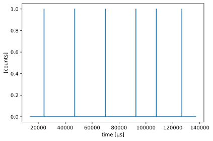
Stitch the frames#
The time coordinate in our data represents the time between the source \(t_{0}\) and the time when the neutron hits the detector. However, the WFM choppers are now acting as the new source choppers. This means that the neutron time-of-flight, which will be used to compute the neutron wavelengths, is now defined as the time between when the neutron crossed the WFM choppers and when it hit the detector (see Fig. 5).
Because we only know the time at which the neutron arrived at the detector, not when it left the source, the most sensible value to use as time the neutron passed through the WFM choppers is the mid-point (in time) between the WFM chopper openings, in each frame. This is represented by \(t_{\rm WFM}(N)\) in Fig. 5.
By using the start and end detector arrival time for each frame contained in the frames Dataset, we extract all the neutrons in a given frame \(N\) and subtract \(t_{\rm WFM}(N)\) (also found in frames) from the time coordinate in that frame.
Finally, we then merge (or rebin) the neutrons from all the frames onto a common time-of-flight axis.
All this is performed in a single operation using the wfm.stitch function:
[15]:
stitched = wfm.stitch(frames=frames, data=da, dim='time', bins=2001)
stitched.plot()
[15]:
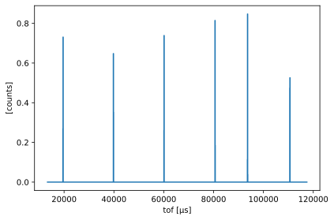
The resulting coordinate is now time-of-flight (tof), and we can use scippneutron to convert the time-of-flight to wavelength.
[16]:
from scippneutron.conversion.graph import beamline, tof
graph = {**beamline.beamline(scatter=False), **tof.elastic("tof")}
wav = stitched.transform_coords("wavelength", graph=graph)
wav
[16]:
- wavelength: 2001
- Ltotal()float64m53.0
Values:
array(53.) - chopper_wfm_1()PyObjectDataGroup(sizes={'frame': 6}, keys=['frequency', 'position', 'phase', 'cutout...
Values:
DataGroup(sizes={'frame': 6}, keys=[ frequency: Variable({}), position: Variable({}), phase: Variable({}), cutout_angles_center: Variable({'frame': 6}), cutout_angles_width: Variable({'frame': 6}), kind: Variable({}), ]) - chopper_wfm_2()PyObjectDataGroup(sizes={'frame': 6}, keys=['frequency', 'position', 'phase', 'cutout...
Values:
DataGroup(sizes={'frame': 6}, keys=[ frequency: Variable({}), position: Variable({}), phase: Variable({}), cutout_angles_center: Variable({'frame': 6}), cutout_angles_width: Variable({'frame': 6}), kind: Variable({}), ]) - position()vector3m[ 0. 0. 60.]
Values:
array([ 0., 0., 60.]) - source_position()vector3m[0. 0. 7.]
Values:
array([0., 0., 7.]) - source_pulse_length()float64µs2860.0
Values:
array(2860.) - source_pulse_t_0()float64µs130.0
Values:
array(130.) - tof(wavelength [bin-edge])float64µs1.334e+04, 1.339e+04, ..., 1.174e+05, 1.174e+05
Values:
array([ 13340.38075481, 13392.40326751, 13444.42578022, ..., 117333.38365677, 117385.40616948, 117437.42868218]) - wavelength(wavelength [bin-edge])float64Å0.996, 1.000, ..., 8.762, 8.766
Values:
array([0.99575472, 0.99963779, 1.00352086, ..., 8.75801616, 8.76189923, 8.7657823 ])
- (wavelength)float64counts0.0, 0.0, ..., 0.0, 0.0
Values:
array([0., 0., 0., ..., 0., 0., 0.])
[17]:
wav.plot()
[17]:
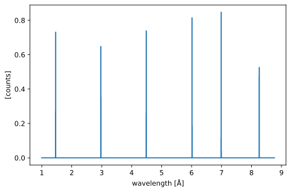
Zooming in on the first spike, we notice that something is not quite right: the original wavelength was 1.5 Å but on the figure below is closer to 1.46 Å.
[18]:
wav["wavelength", (1.2 * sc.units.angstrom) : (1.7 * sc.units.angstrom)].plot()
[18]:
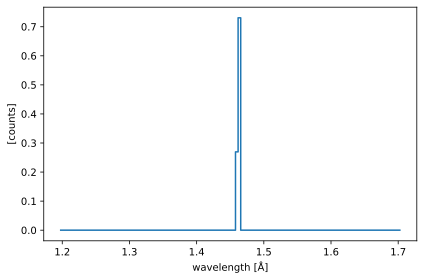
Now the WFM method guarantees a constant \(\Delta\lambda / \lambda\), and so it is not surprising to see the final reduced wavelength not exactly matching the original. The question is: is the error within \(\Delta\lambda / \lambda\)?
[19]:
# Distance between WFM choppers
dz_wfm = sc.norm(
ds.coords["chopper_wfm_2"].value["position"]
- ds.coords["chopper_wfm_1"].value["position"]
)
# Delta_lambda / lambda
dlambda_over_lambda = dz_wfm / sc.norm(
coords['position'] - frames['wfm_chopper_mid_point']
)
(1.5 * sc.units.angstrom) * dlambda_over_lambda
[19]:
- ()float64Å0.012735849056603753
Values:
array(0.01273585)
At 1.5 Å, the resolution is 0.0127 Å, which is smaller than the offset we observe above. In fact, we can perform a quick check using Scipp’s label-based slicing, to verify that the sum of the counts in a region \(\Delta\lambda\) wide around the original wavelength should be equal to 1:
[20]:
for i in range(len(wavelengths)):
lam = wavelengths["wavelength", i]
half_dlam = 0.5 * dlambda_over_lambda * lam
print(
"Lambda:",
lam,
", count in range:",
sc.sum(wav['wavelength', lam - half_dlam : lam + half_dlam]).value,
)
Lambda: <scipp.Variable> () float64 [Å] 1.5 , count in range: 0.0
Lambda: <scipp.Variable> () float64 [Å] 3 , count in range: 0.0
Lambda: <scipp.Variable> () float64 [Å] 4.5 , count in range: 1.0
Lambda: <scipp.Variable> () float64 [Å] 6 , count in range: 1.0
Lambda: <scipp.Variable> () float64 [Å] 7 , count in range: 1.0
Lambda: <scipp.Variable> () float64 [Å] 8.25 , count in range: 1.0
This reveals that the reduced wavelengths for the first two neutrons do not agree within the required precision. We go back to our time-distance diagram and look at the paths taken by our 6 neutrons (plotted in red).
[21]:
fig6 = wfm.plot.time_distance_diagram(da)
ax6 = fig6.get_axes()[0]
for i in range(len(wavelengths)):
ax6.plot(
[
(coords['source_pulse_t_0'] + (0.5 * coords['source_pulse_length'])).value,
arrival_times['wavelength', i].value,
],
[0.0, sc.norm(coords['position']).value],
color='r',
)
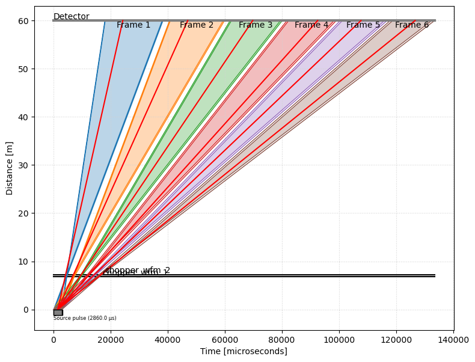
Taking a closer look at the WFM choppers, we observe that the numbers we picked for the first two neutrons actually lead to unphysical paths: they do not make it through the chopper openings!
[22]:
for t in ax6.texts[3:]:
t.remove()
ax6.set_xlim(-1.0e3, 2.0e4)
ax6.set_ylim(-1.5, 10.0)
fig6.canvas.draw_idle()
fig6
[22]:
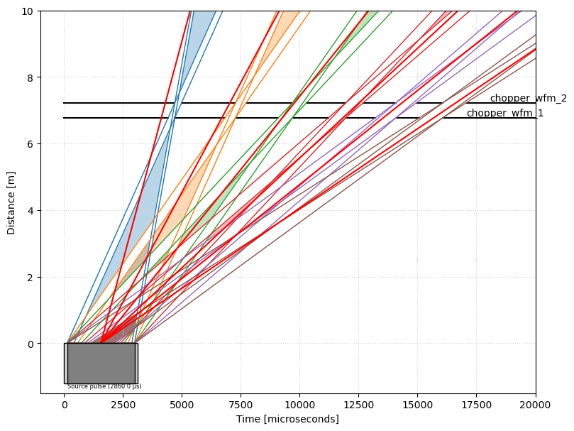
So we modify our values so that neutrons 1 and 2 make it through:
[23]:
wavelengths = sc.array(
dims=['wavelength'], values=[1.75, 3.2, 4.5, 6.0, 7.0, 8.25], unit='angstrom'
)
arrival_times = (
sc.to_unit(alpha * dz * wavelengths, 'us')
+ coords['source_pulse_t_0']
+ (0.5 * coords['source_pulse_length'])
)
[24]:
fig7 = wfm.plot.time_distance_diagram(da)
ax7 = fig7.get_axes()[0]
for i in range(len(wavelengths)):
ax7.plot(
[
(coords['source_pulse_t_0'] + (0.5 * coords['source_pulse_length'])).value,
arrival_times['wavelength', i].value,
],
[0.0, sc.norm(coords['position']).value],
color='r',
)
ax7.set_xlim(-1.0e3, 2.0e4)
ax7.set_ylim(-1.5, 10.0)
for t in ax7.texts[3:]:
t.remove()
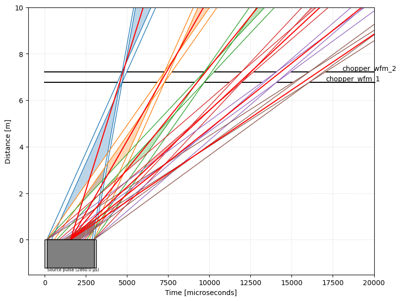
And repeat the stitching process:
[25]:
tmin = sc.min(arrival_times)
tmax = sc.max(arrival_times)
dt = 0.1 * (tmax - tmin)
coords['time'] = sc.linspace(
dim='time', start=(tmin - dt).value, stop=(tmax + dt).value, num=2001, unit=dt.unit
)
counts, _ = np.histogram(arrival_times.values, bins=coords['time'].values)
da = sc.DataArray(
coords=coords, data=sc.array(dims=['time'], values=counts, unit='counts')
)
stitched = wfm.stitch(frames=frames, data=da, dim='time', bins=2001)
wav = stitched.transform_coords("wavelength", graph=graph)
[26]:
wav["wavelength", (1.55 * sc.units.angstrom) : (1.95 * sc.units.angstrom)].plot()
[26]:
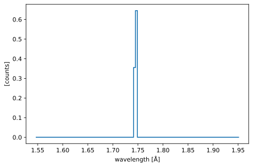
This time, the peak is much closer to 1.75 Å, and we can make sure the sum within the \(\Delta\lambda\) range is 1 for all 6 neutrons:
[27]:
for i in range(len(wavelengths)):
lam = wavelengths["wavelength", i]
half_dlam = 0.5 * dlambda_over_lambda * lam
print(
"Lambda:",
lam,
", count in range:",
sc.sum(wav['wavelength', lam - half_dlam : lam + half_dlam]).value,
)
Lambda: <scipp.Variable> () float64 [Å] 1.75 , count in range: 1.0
Lambda: <scipp.Variable> () float64 [Å] 3.2 , count in range: 1.0
Lambda: <scipp.Variable> () float64 [Å] 4.5 , count in range: 1.0
Lambda: <scipp.Variable> () float64 [Å] 6 , count in range: 1.0
Lambda: <scipp.Variable> () float64 [Å] 7 , count in range: 1.0
Lambda: <scipp.Variable> () float64 [Å] 8.25 , count in range: 1.0
References#
Schmakat P., Seifert M., Schulz M., Tartaglione A., Lerche M., Morgano M., Böni P., Strobl M., 2020, Wavelength frame multiplication chopper system for the multi-purpose neutron-imaging instrument ODIN at the European Spallation Source, Nuclear Instruments and Methods in Physics Research Section A: Accelerators, Spectrometers, Detectors and Associated Equipment, 979, 164467